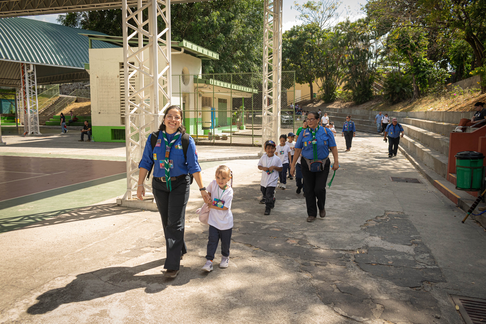

Nueva Rama
Reapertura de la rama de Castores
"Ser Castor es dar el primer paso en una aventura que forma, inspira y deja huella para toda la vida."
Escrito por Claudia Chávez
Una nueva etapa para los más pequeños
El 7 de marzo se llevó a cabo la reapertura de la rama de Castores, marcando un momento significativo dentro del grupo scout y dando inicio a una nueva etapa orientada al desarrollo de los más pequeños.
En esta jornada se contó con la participación de 25 niños, quienes, con entusiasmo y curiosidad, comenzaron su camino dentro del movimiento scout. Esta reapertura representa no solo la activación de una nueva sección, sino también el compromiso de brindar a la niñez un espacio formativo basado en valores, aprendizaje y convivencia.
El proceso que condujo a este momento fue resultado de la planificación, dedicación y esfuerzo conjunto de diversos actores que creyeron en la importancia de fortalecer el movimiento desde las primeras edades.
Origen y desarrollo del proyecto
La iniciativa de reactivar la rama de Castores surge a partir de una experiencia que viví en Guatemala, donde tuve la oportunidad de conocer el funcionamiento de una sección dirigida a niños pequeños, denominada "Cachorros".
Durante ese período, mientras formaba parte de la rama Rover, nació en mí el interés por replicar este modelo, con el propósito de ofrecer a más niños la posibilidad de integrarse al escultismo desde temprana edad, fomentando en ellos valores, habilidades sociales y el contacto con la naturaleza.
Este interés se consolidó cuando mi mamá, Claudia Grande, participó en una de las reuniones en Guatemala, donde pudo observar directamente el desarrollo de las actividades y el impacto positivo en los niños. A partir de esa experiencia, ambas tuvimos claridad sobre la importancia de impulsar este proyecto y adaptarlo a nuestro contexto.
Para llevarlo a cabo, conté con el valioso apoyo de Miguel Linares, Roy Venegas y Sandra Platero, quienes contribuyeron mediante acompañamiento, orientación y gestión administrativa, facilitando la estructuración de la iniciativa.
Asimismo, el comité de padres desempeñó un rol fundamental, brindando respaldo, confianza y participación activa durante todo el proceso, lo que permitió fortalecer la implementación de la rama de Castores y asegurar su sostenibilidad.
De manera paralela, este proceso ha tenido un valor significativo a nivel personal, ya que he tenido la oportunidad de compartirlo con Nicole Amador, miembro del movimiento scout y compañera de trayectoria durante más de once años, así como con mi mamá, quien asumió la responsabilidad de liderar la rama, aportando su experiencia en educación parvularia al desarrollo formativo de los niños.
Galería

.jpg)
.jpg)
Impacto y proyección
La reapertura de la rama de Castores representa un paso importante en la consolidación del movimiento scout, al ampliar las oportunidades de participación desde la infancia.
Esta sección se concibe como un espacio integral en el que los niños pueden iniciar su formación en valores, desarrollar habilidades sociales, fortalecer su autonomía y aprender mediante el juego y la exploración.
De esta manera, el proyecto no solo responde a una necesidad actual, sino que también sienta las bases para el crecimiento futuro del movimiento, apostando por la formación de nuevas generaciones comprometidas con su entorno.